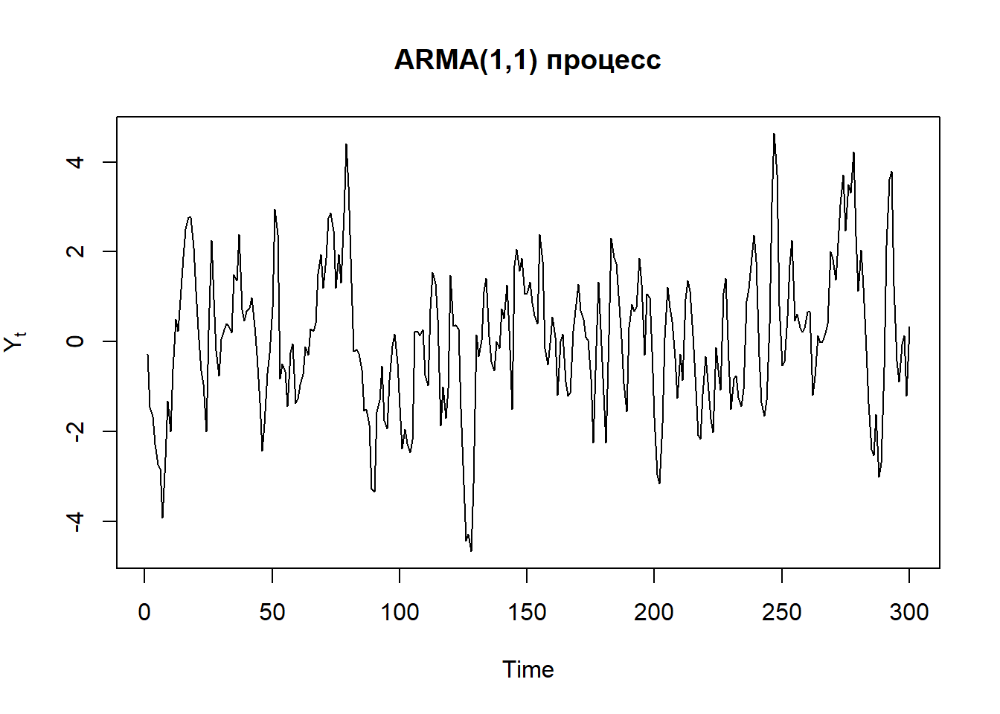
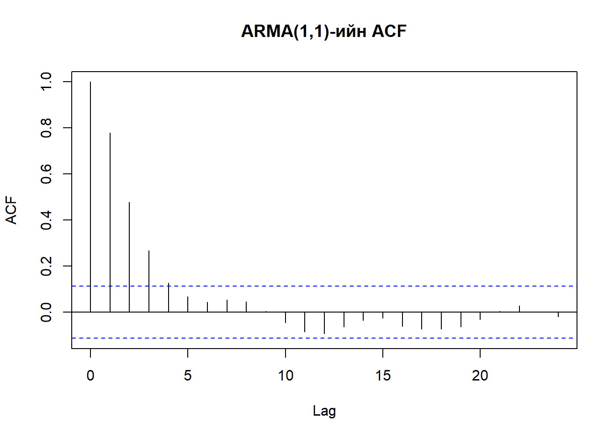
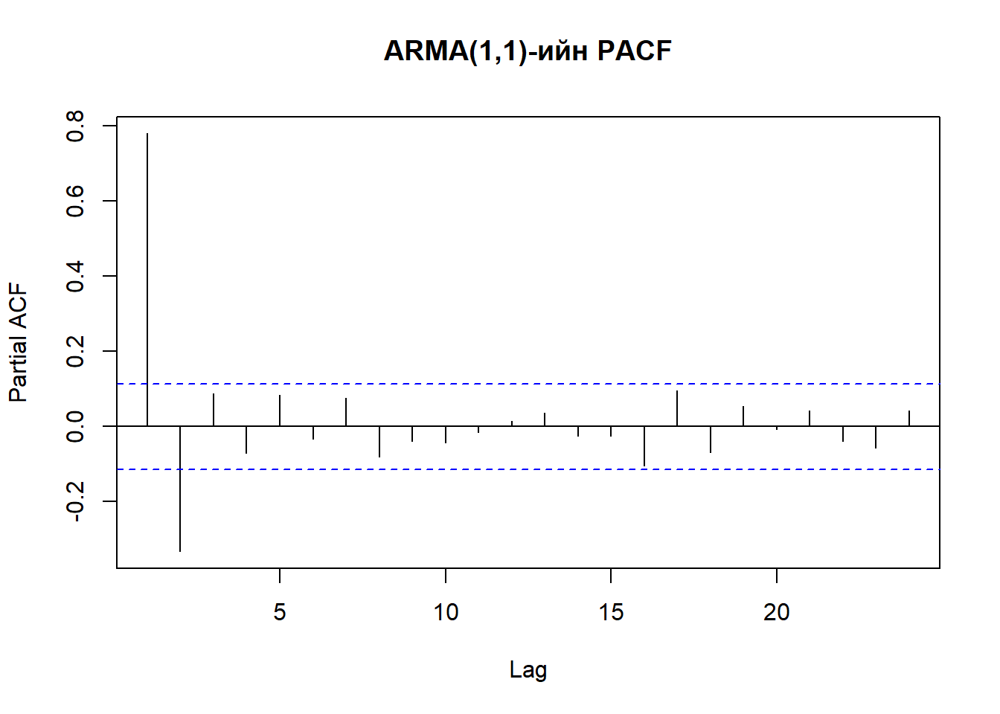
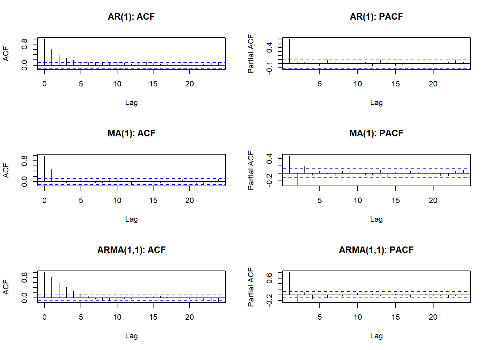
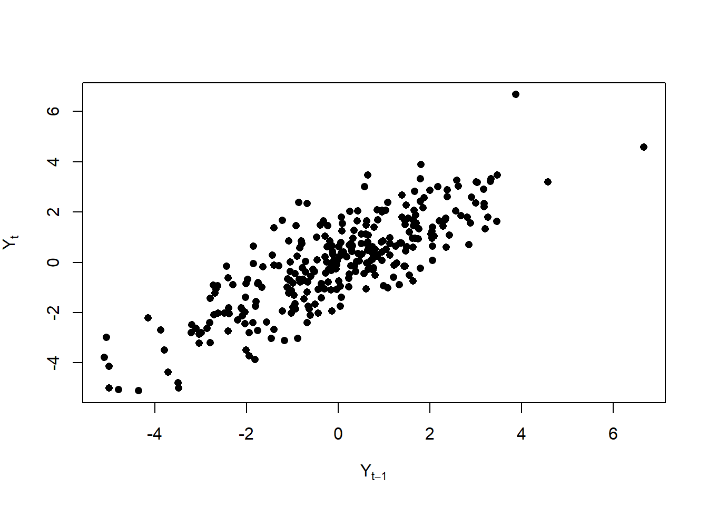

set.seed(123)
arma11 <- arima.sim(
model=list(ar=.7, ma=.4),
n=300
)
plot.ts(
arma11,
main="ARMA(1,1) процесс",
ylab=expression(Y[t])
)
ARMA загвар нь авторегрессив (AR) болон хөдөлгөөнт дундаж (MA) процессуудын санааг нэгтгэдэг.
Энэ нь стационар хугацааны цувааны загваруудын хамгийн чухал ангиллын нэг бөгөөд Box-Jenkins аргачлалын үндэс болдог.
ARMA загвар нь дараахь хоёрыг хоёуланг нь илэрхийлж чадна:
ARMA((p,q)) процессыг
\[ Y_t = \phi_1Y_{t-1} +\phi_2Y_{t-2} +\cdots +\phi_pY_{t-p} + \varepsilon_t + \theta_1\varepsilon_{t-1} +\theta_2\varepsilon_{t-2} +\cdots +\theta_q\varepsilon_{t-q}, \]
гэж тодорхойлдог бөгөөд энд
\[ \{\varepsilon_t\} \sim WN(0,\sigma^2). \]
Энд:
Хэрэв
\[ q=0, \]
бол
\[ ARMA(p,0)=AR(p). \]
Хэрэв
\[ p=0, \]
бол
\[ ARMA(0,q)=MA(q). \]
Иймд AR ба MA процессууд нь ARMA загварын онцгой тохиолдлууд юм.
Хамгийн энгийн ARMA загвар нь
\[ Y_t = \phi Y_{t-1} + \varepsilon_t + \theta\varepsilon_{t-1}. \]
Энэ загвар нь дараахь хоёрыг нэгтгэдэг:
ARMA процессуудын хувьд стационар байдал нь AR хэсгээс хамаарна.
ARMA(1,1)-ийн хувьд стационар байхын тулд
\[ |\phi|<1 \]
шаардлагатай.
| () | Стационар уу? |
|---|---|
| 0.3 | Тийм |
| 0.8 | Тийм |
| -0.5 | Тийм |
| 1.0 | Үгүй |
| 1.1 | Үгүй |
Буцаах боломжтой байдал нь MA хэсгээс хамаарна.
ARMA(1,1)-ийн хувьд буцаах боломжтой байхын тулд
\[ |\theta|<1 \]
шаардлагатай.
Энэ нь процессын цор ганц дүрслэлийг баталгаажуулдаг.
Стационар ARMA(1,1)-ийн хувьд
\[ E(Y_t)=0. \]
Ерөнхийдөө, хэрэв тогтмол гишүүн орсон бол дундаж нь цаг хугацааны явцад тогтмол байна.
Дараахьыг авч үзье:
\[ Y_t = 0.7Y_{t-1} + \varepsilon_t + 0.4\varepsilon_{t-1}. \]
set.seed(123)
arma11 <- arima.sim(
model=list(ar=.7, ma=.4),
n=300
)
plot.ts(
arma11,
main="ARMA(1,1) процесс",
ylab=expression(Y[t])
)
AR бүрэлдэхүүнээс үүсэх үргэлжлэл ба MA бүрэлдэхүүнээс үүсэх богино хугацааны нөлөөг ажиглаарай.
acf(
arma11,
main="ARMA(1,1)-ийн ACF"
)
MA загваруудаас ялгаатай нь ACF тасардаггүй.
Цэвэр AR загваруудаас ялгаатай нь хэв маяг нь ихэвчлэн илүү төвөгтэй байдаг.
ACF ерөнхийдөө тэг рүү аажмаар буурдаг.
pacf(
arma11,
main="ARMA(1,1)-ийн PACF"
)
PACF мөн аажмаар буурдаг.
Энэ нь ARMA загваруудын таних шинж чанаруудын нэг юм.
Иймд ARMA загваруудыг ихэвчлэн хоёр функцийг нэгэн зэрэг шалгаж тодорхойлдог.
par(mfrow=c(3,2))
ar1 <- arima.sim(
model=list(ar=.7),
n=300
)
acf(ar1, main="AR(1): ACF")
pacf(ar1, main="AR(1): PACF")
ma1 <- arima.sim(
model=list(ma=.7),
n=300
)
acf(ma1, main="MA(1): ACF")
pacf(ma1, main="MA(1): PACF")
arma11 <- arima.sim(
model=list(ar=.7, ma=.4),
n=300
)
acf(arma11, main="ARMA(1,1): ACF")
pacf(arma11, main="ARMA(1,1): PACF")
Онцлог хэв маягуудыг харьцуулаарай.
Хамаарлыг дүрслэхэд хоцролтын график ашиглаж болно.
plot(
x = arma11[-length(arma11)],
y = arma11[-1],
xlab = expression(Y[t-1]),
ylab = expression(Y[t]),
pch = 16
)
Хамаарал нь ерөнхийдөө цагаан чимээнээс илүү хүчтэй бөгөөд AR ба MA нөлөөг хоёуланг нь илэрхийлдэг.
ARMA(1,1) загварыг хамгийн их магадлалын аргаар үнэлж болно.
fit <- arima(
arma11,
order=c(1,0,1)
)
fit
Call:
arima(x = arma11, order = c(1, 0, 1))
Coefficients:
ar1 ma1 intercept
0.6933 0.3851 -0.0051
s.e. 0.0509 0.0733 0.2623
sigma^2 estimated as 1.029: log likelihood = -430.61, aic = 869.22Үнэлсэн коэффициентүүд нь симуляцад ашигласан утгуудтай ойрхон байх ёстой.
Өөр өөр ARMA загваруудыг Акайке мэдээллийн шалгуур (AIC) ашиглан харьцуулж болно.
fit1 <- arima(arma11, order=c(1,0,0))
fit2 <- arima(arma11, order=c(0,0,1))
fit3 <- arima(arma11, order=c(1,0,1))
AIC(fit1, fit2, fit3) df AIC
fit1 3 890.8641
fit2 3 976.2085
fit3 4 869.2151Хамгийн бага AIC-тай загварыг ихэвчлэн илүүд үздэг.
Таамаглалууд нь дараахь зүйлд үндэслэнэ:
library(forecast)
fit <- Arima(
arma11,
order=c(1,0,1)
)
forecast(fit, h=10) Point Forecast Lo 80 Hi 80 Lo 95 Hi 95
301 -0.60561759 -1.912139 0.7009042 -2.603770 1.392535
302 -0.42142755 -2.342873 1.5000181 -3.360025 2.517170
303 -0.29373540 -2.449182 1.8617111 -3.590206 3.002735
304 -0.20521116 -2.464515 2.0540925 -3.660518 3.250096
305 -0.14384057 -2.451397 2.1637157 -3.672943 3.385262
306 -0.10129461 -2.431686 2.2290971 -3.665321 3.462732
307 -0.07179908 -2.413087 2.2694884 -3.652489 3.508891
308 -0.05135091 -2.397857 2.2951552 -3.640022 3.537321
309 -0.03717495 -2.386185 2.3118352 -3.629676 3.555326
310 -0.02734728 -2.377560 2.3228654 -3.621687 3.566993Таамаглал нь процессын урт хугацааны дундаж руу аажмаар ойртдог.
ARMA((p,q)) загвар нь дараахь хоёрыг нэгтгэдэг:
ARMA(1,1)-ийн хувьд
\[ Y_t = \phi Y_{t-1} + \varepsilon_t + \theta\varepsilon_{t-1}. \]
Чухал шинж чанарууд:
ARMA загварууд нь олон бодит хугацааны цувааг дүрслэх уян хатан хүрээг бүрдүүлдэг.
arima() ашиглан ARMA(1,1) загварыг үнэл.